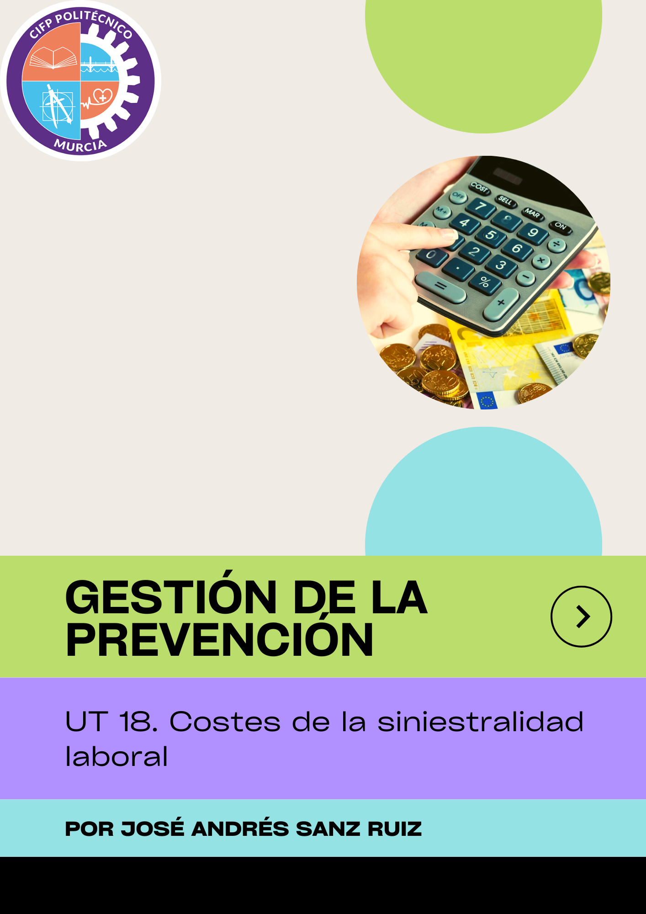
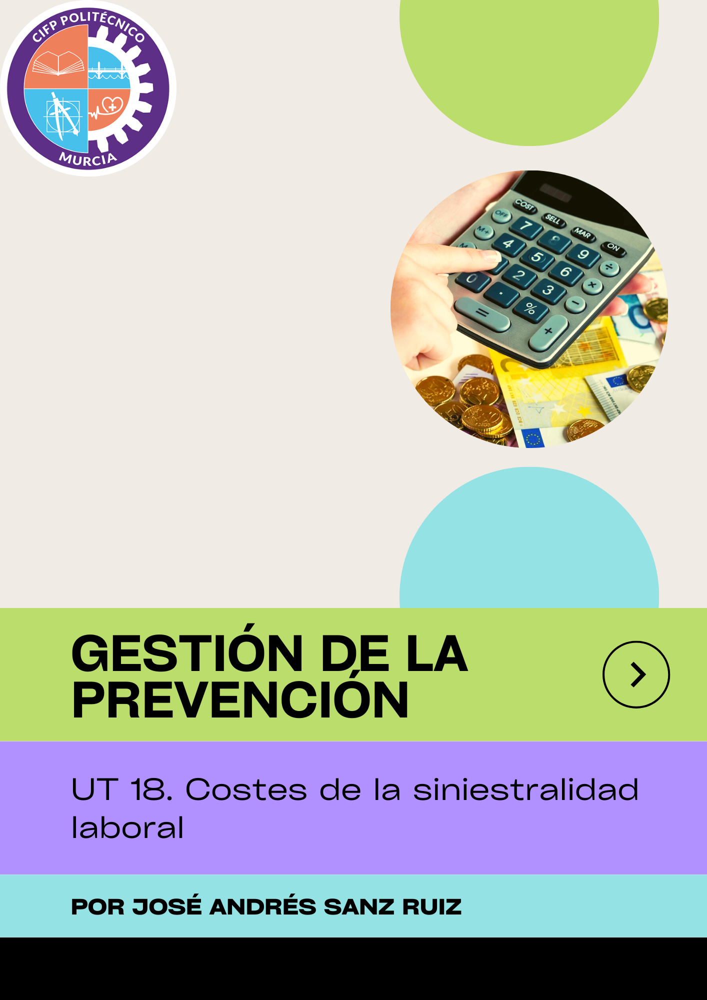

UT 18. COSTES DE LA SINIESTRALIDAD LABORAL
UT 18. Costes de la siniestralidad laboral
Obra publicada con Licencia Creative Commons Reconocimiento Compartir igual 4.0

Obra publicada con Licencia Creative Commons Reconocimiento Compartir igual 4.0